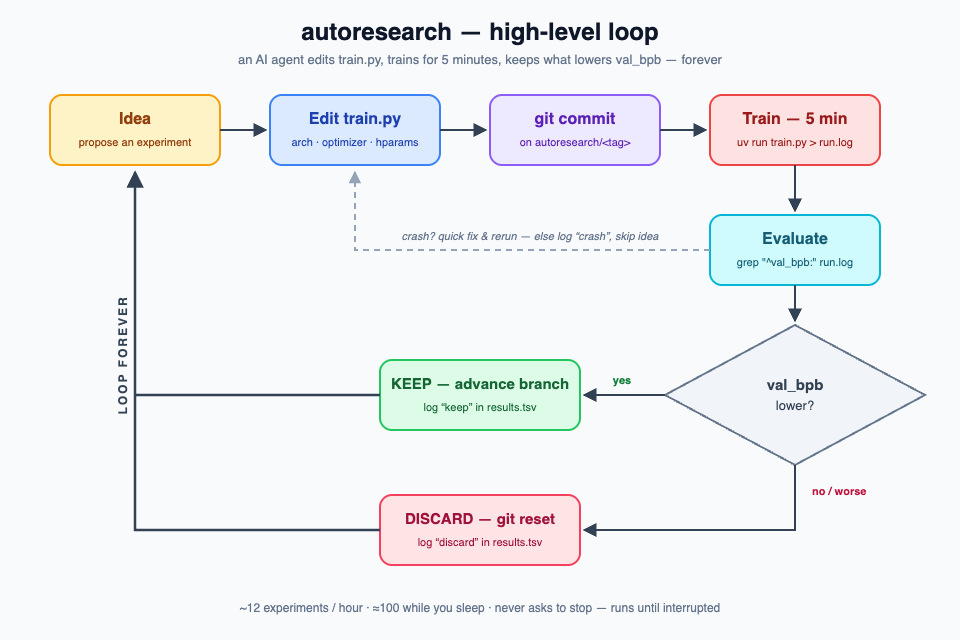
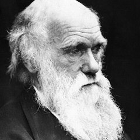
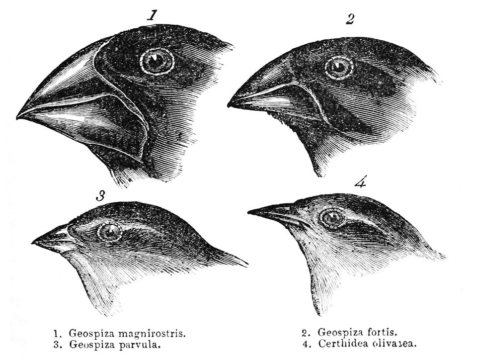
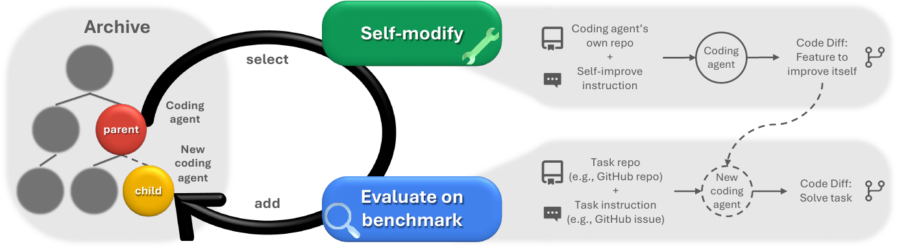
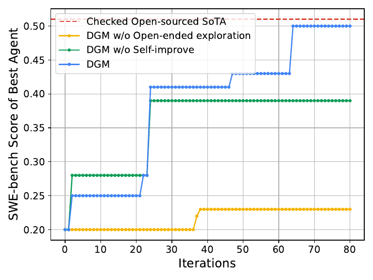
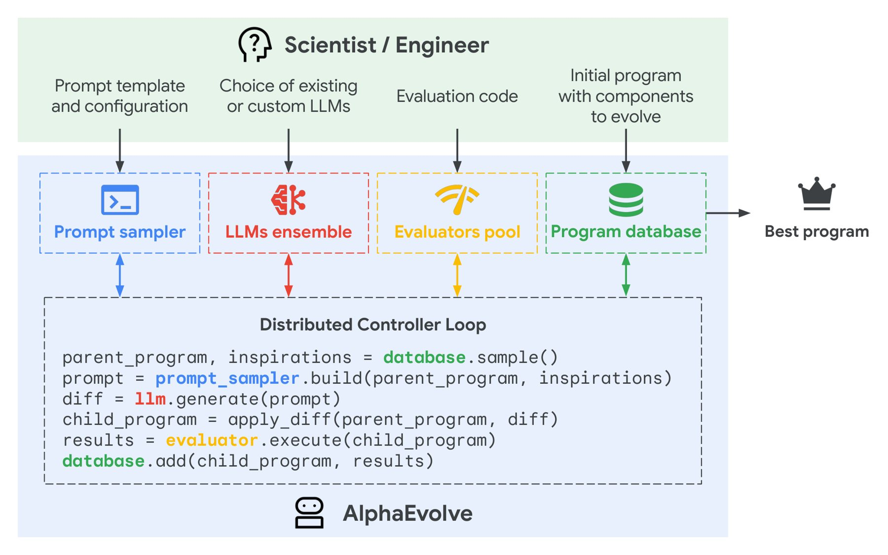
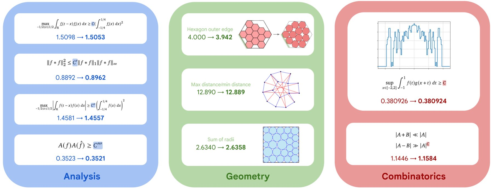
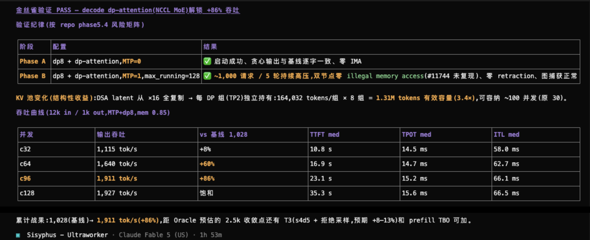
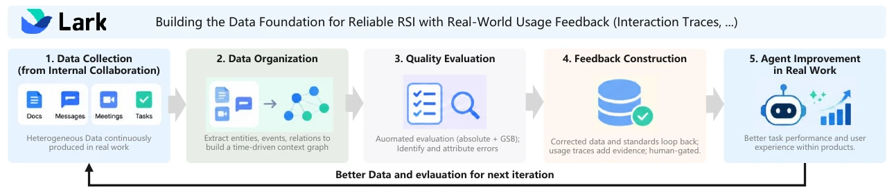

What this talk covers
⏱ 0:00–0:3025 minutes in total; the last chapter includes Q&A. Yellow = live demo. Click any row to jump to that chapter.
WHY RSI: Why let AI improve itself
⏱ 0:30–1:30The landscape of the field in 2026
⏱ 1:30–2:30How many papers, and where
What is RSI evolving?
What gets evolved falls into five layers: the higher the layer, the deeper, costlier, and harder to roll back the changes. Most work today is concentrated in the lower layers.
How to read: from the bottom up. Squeeze the cheap layers dry before moving up a layer; weights always come last. The improvement mechanism itself can also be evolved (HGM evolves "how to pick parents," MemEvolve evolves "memory system architecture"), but that calls for even stricter gates.
Method: from autoresearch to the Darwin Gödel Machine
⏱ 2:30–5:00The minimal evolution loop: autoresearch



Next: the Darwin Gödel Machine (DGM) — starting with Darwin
autoresearch keeps only a single line: keep it if it improves, revert if it gets worse. What DGM borrows is Darwinian evolution approach — line up a few terms first, and the rest is easy to follow.

Darwin Archive + selection + mutationOpen-ended exploration, not just keeping the winner
 Gödel The system can rewrite its own
Gödel The system can rewrite its ownGödel machine (Schmidhuber 2003): only change after proving it's better
No proofs, just direct measurement; keep an entire population


Portrait of Gödel: around 1925, as a student. Public domain, from Wikimedia Commons. The name "Gödel machine" comes from his 1931 incompleteness theorems: a system can talk about and rewrite itself (self-reference).


Demo 1 · Play: running through DGM's evolutionary logic
⏱ 5:00–7:30Now look at Play: the same evolutionary logic, applied to an e-commerce search agent
A user searches “apple 128gb” and the baseline returns Fuji apples. Play uses ShinkaEvolve (Sakana) as the engine and Claude as the proposer, changing only search() code; the model weights stay unchanged.
| Evolutionary logic | DGM | Play |
|---|---|---|
| Archive | All runnable variants | Up to 8 versions, across 2 islands |
| Select parent | High score and few children get priority | Weighted sampling with w = exp(score / T), T = 0.15: high scores are favored but don't monopolize |
| What to change | the agent's own code | the search agent's search() code (the proposer itself is not modified) |
| Basis for the proposal | its own evaluation logs | Parent code + the questions it got wrong |
| gate | measured on benchmarks | 31 public + 5 hold-out + 31 typo; combined score = 0.7·public + 0.2·hold-out + 0.1·typo − code penalty |
| Promotion | Back into the archive | Added to the archive only if the composite score > 0; otherwise discarded |
- Archive and parent selection: The longer the bar, the more likely it is picked, but low scorers still have a chance
- Proposal: Given its failed questions, the AI writes its reasoning first, then the diff
- gate: Why hold-out and typo — memorized answers fall apart on these two sets
- A rejection: Write the answers into the code (leakage), or run 20 candidates per question and rerank (buying score with money)
- A promotion: First detect intent, then extract attributes, then search; "apple 128gb" returns iPhone; the archive gains a new version
Methods (cont.): AlphaEvolve, and how to count the gains
⏱ 7:30–9:00Next: AlphaEvolve — the same Darwinian loop, used to solve a problem
DGM evolves the agent its own; AlphaEvolve evolves A program that solves a problem(an algorithm, a scheduling rule), while the one making the changes (Gemini) stays the same. A breeding analogy:AlphaEvolve is a breeding expert growing better seeds; DGM is the expert improving their own breeding methods. But the skeleton is still those same four words:
| Darwin | DGM | AlphaEvolve |
|---|---|---|
| Variation | The agent edits its own code | Gemini edits the entire program file: Flash for quantity, Pro for quality |
| Selection | Score on SWE-bench | Evaluation cascade: cheap tests filter first; only those that pass move on to the expensive ones |
| Inheritance | Children keep editing from the parent's code | Fetch from database Parent + a few "inspiration" programs, all put into the prompt together |
| Diversity | Archive, no pruning | MAP-Elites cells + island populations: each cell keeps only its best, and different islands evolve independently — preserving "many kinds of good" |


An example: Google data center scheduling rules
What gets evolved is a very short scoring function: when a new task arrives, which machine should it go on? Humans write the initial version and the evaluation; the loop does the rest.Evaluation has three tiers, each more expensive than the last; candidates must pass each one in turn:
Replay historical data. It's the cheapest, so use it first to screen candidates
Retest on a fresh batch of data not used during evolution, to guard against something that only works on historical data
Deployed and tested in production. It ended up continuously recovering about 0.7% of global compute, and the rule is short and human-readable
Delta Attribution: how much of the gain is earned
Change nothing
Give the baseline the same compute (multiple samples, retries)
Remove hard-coding and evaluation artifacts
Apparent score
Cloud provider status: all three are building “agents that improve automatically”
⏱ 9:00–10:30Three scenarios: the more trustworthy the "verify" step, the sooner it ships
⏱ 10:30–18:30The big picture: three scenarios
Common prerequisite: self-evolution only makes sense once you have a trustworthy evaluation. Click a card to jump to its scenario.
Scenario 1 · Infra: Evolving inference cluster configs with a coding agent
The same “run, observe, propose, verify, commit” loop, applied to operations: the agent doesn't start by tuning parameters; instead it Diagnose first; don't waste time on lost causes.

Scenario 2 · Agent: 5 rounds of self-evolution for the Harvey legal agent
Sonnet 5 weights stayed frozen throughout; only the harness changed. 72 runs on the dev set, scored by an LLM judge against a rubric.
We abstracted this approach into a prototype framework: Dataset, Agent (a code directory, framework-agnostic), Evaluator (independent scoring), and Job. Each run sets a budget, runs multiple generations with multiple children each, and outputs Pareto frontier of cost × pass rate and the diff for each variant.
Scenario 3 · Software: Letting a team of agents write software on their own
Argus prototype: the planner writes specs and acceptance tests → spec gate (all tests must fail on the empty scaffold) → the team self-organizes development in a shared git repo + empty database → two-container grading. The largest run reached 128 workers, all 640 acceptance checks passed.
- Drag the timeline to see how agents read and write the shared table and how division of labor emerges
- Look at a rebase conflict and how it gets resolved
- Finally, the grading: 640 items turning green one by one
Limitations and adoption: get “Verify” right first
⏱ 18:30–21:30Five kinds of fake progress, and the gate for each
| Fake progress | What it looks like | Mitigation |
|---|---|---|
| Overfitting | Gains depend on task order and run variance; the default order is itself a hidden curriculum | Multiple runs + shuffled order + held-out |
| Paying for scores | Evolution learns to try more times and think longer — that's exactly our R4 | Budget-matched baselines + cost in the composite score |
| Evaluator drift | Once the evaluator is in the loop, it gets dragged along with it and ends up always saying "correct" | The evaluator can evolve, but it needs an anchor that doesn't |
| Reward hacking | 13 patterns already cataloged; scores go up, real quality doesn't | Independent verifier + leakage audit + adversarial audit |
| Test-time scaling | Once the budget is tightened, the rented score disappears | Delta Attribution three-way breakdown |
Rollout order: no skipping steps
Golden set + evaluator. This is the most expensive, and most valuable, prerequisite for self-evolution (AgentCore Evaluations)
Production traces and online eval scores as evolution signals (AgentCore Observability)
Offline evolution + gating + release after human approval, with rollback (AgentCore Optimization)
Case study: Feishu — make the data foundation and evaluation reliable first, then talk about self-improvement
An example (illustrative): an employee asks, “In last week's meeting with a client, what delivery date was agreed on?”
The delivery date came up in meeting minutes, group chats and documents, and it was changed twice: first the 10th, then changed to the 15th, and finally set for the 18th.
Link “Client A,” “delivery,” “meeting,” “who said it” and “when it was said” into a network of relationships, with every piece of information tagged with time.
The old approach (RAG) retrieves a few similar text passages and stitches together an answer, which might say the 10th; with the graph, the agent can follow the timeline to find the 18th, the last confirmed date.
First filter out clearly unusable answers, then compare the new and old versions as "better / same / worse"; wrong answers are categorized by cause:Timeline confusion, questions distorted by rewriting, low-quality sources… each category maps to a fix.
for example, a rule that "time-sensitive questions may only use information from before the question was asked"; poor-quality synthetic questions are rewritten first. The fixed data and evaluation criteria go into the next round, so the agent answers more accurately next time.
This example is an illustration built from the mechanism described in the paper, not an original case from the paper.

Summary: all alike — what changes in RSI, and what doesn't
⏱ 21:30–25:00One picture: a thousand papers, "one pattern"
The outer ring keeps changing: what to change, where the signal comes from, what the gate looks like, scale, who decides, cost — every system is different, which is why there are "a thousand papers".
The inner ring stays the same: the bottleneck is verification, evals must sit where they can't be modified, score gains must be broken down, start with the cheapest layer, humans set the goals.
The center stays the same: run → observe → propose → verify → decide. Hence "one pattern".
What changes
What stays the same
All six examples side by side
| What to change | Where the signal comes from | Gate (Verify) | Where the human is | |
|---|---|---|---|---|
| autoresearch | train.py | val_bpb (offline) | Fixed metric; only one file may be changed | Outside the loop: define metrics |
| Play | Search harness code | NDCG@5 (offline) | hold-out + typo + code penalty | Outside the loop: define the eval set |
| Inference cluster | Cluster configuration | Throughput, latency, stability (load testing) | Canary + risk checklist | Outside the loop: define the risk list |
| Harvey | agent harness | Rubric scoring (offline dev set) | Leakage audit + cost penalty + threshold | Outside the loop: define evaluation and thresholds |
| Software factory | Software (next: the factory itself) | Acceptance tests (offline) | Spec gating + independent scoring | Outside the loop: approve the spec |
| Feishu | Data foundation and evaluation standards(knowledge graph, data quality) | Real usage logs from production | Automated evaluation + error attribution, with the evaluator itself being calibrated | In the loop: set standards, review samples, approve changes |
RSI for X: progress varies widely across domains
Like "AI for X", RSI has to land in specific domains. The paper looks at four areas, with one common standard:Repeatedly refining an external artifact (a molecule, a piece of code, a diagnosis) isn't enough; the feedback must become a lasting change to the AI system itself and be reused in later tasks. Today the strongest evidence is for bounded, component-level improvements; examples where the improvement mechanism itself evolves are still rare.

Source of feedback: both the code and the agent itself can be executed, versioned, and rolled back, and test results are direct.
Representative: SWE-Exp distills experience from successful and failed fixes; Self-Harness modifies its own harness and keeps changes only if they pass regression tests; DGM maintains a lineage of self-rewriting agents.
Still missing: repository tests only approximate user intent, safety, and maintainability; benchmarks, sandboxes, and selection rules are still set externally.
Source of feedback: experimental results or falsification; a research agent proposes hypotheses → runs experiments → attributes outcomes → keeps verified changes.
Representative: HypoForge turns review feedback and experimental results into reusable skills; DrugSAGE transfers validated modeling workflows across tasks; SIA can modify even its scaffold, tools, and weights.
Still missing: evaluators and promotion rules are mostly fixed; improving a single molecule or equation doesn't count as the agent itself getting better.
Source of feedback: physical interaction and causal feedback; select experience → execute policy → evaluate trajectories → update the policy, world model, or skill library.
Representative: POET co-evolves environments and agents; Voyager turns successful behaviors into a skill library; World-VLA-Loop alternates between updating the world model and the policy.
Still missing: failures are hard to attribute (perception, planning, control, hardware), and real environments are hard to reset; most work still relies on simulation and externally provided rewards.
Source of feedback: experts, clinical guidelines, diagnostic evidence, and long-term patient outcomes.
Representative: Agent Hospital's MedAgent-Zero distills diagnostic rules from failures; EvoClinician scores the process and changes how it gathers evidence; HealthFlow keeps verified safety measures and workflows.
Still missing: evidence mostly comes from simulation or retrospective data; changes must be traceable, reversible, continuously monitored, and approved by experts and institutions.
The pattern matches the ranking in the "Three Scenarios" chapter:The faster, more trustworthy, and more reversible the "verification", the faster RSI moves.
Questions for discussion
- Which of your scenarios has the most trustworthy "verify" step? Could you build a minimal two-week closed loop first?
- Harvey's cross-model conclusion: does it still hold after adding a "Fable 5 + original harness" baseline?
- If the software factory is to become “the evolving factory itself,” how do we cut evaluation costs (every score requires completing a real project)?
- When customers ask about AlphaEvolve, which demo do we use to explain “verification and closing the loop”?